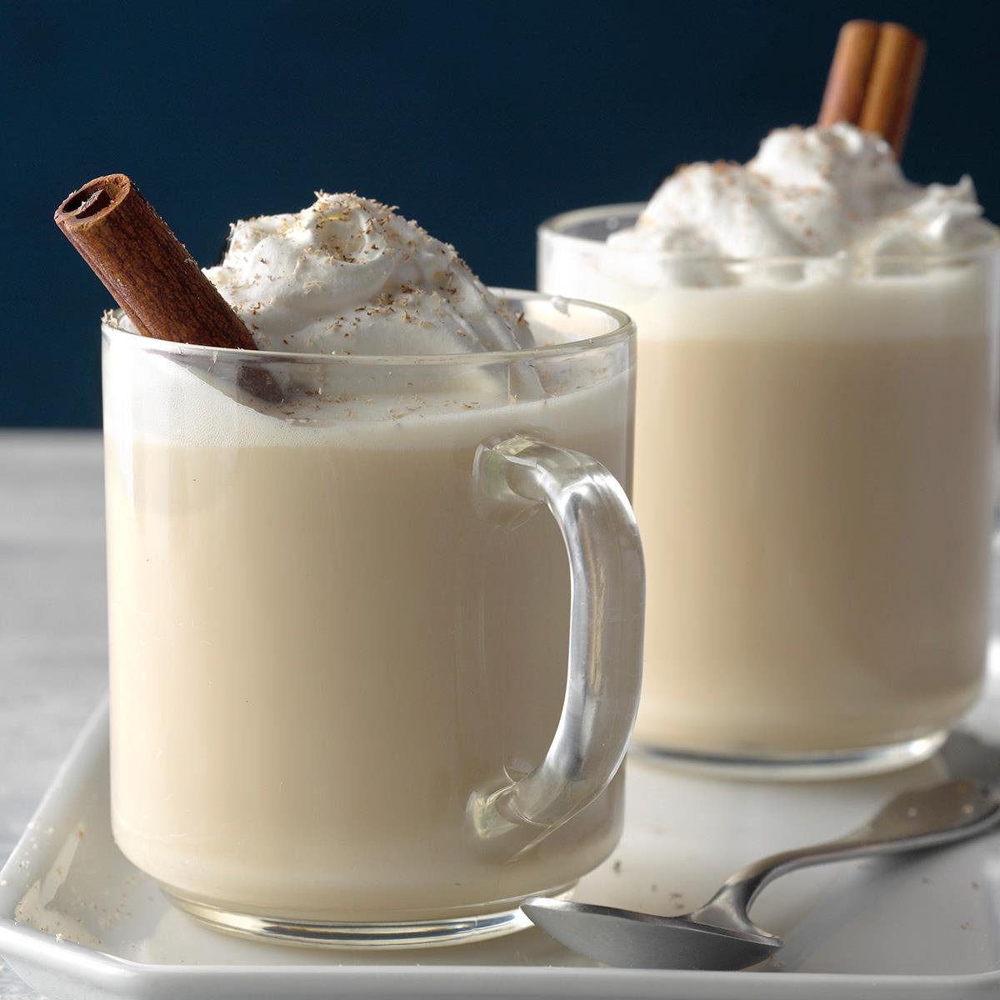

Chai Latte

Earthy and wonderful
The best start and end to any day. Recipe from detoxinista.
Ingredients
- Almond milk
- Black tea
- Cinnamon
- Ginger
- Cloves
- Maple syrup
- If using tea, keep in mind that this drink will have caffeine. Heat up the almond milk in a saucepan over medium-high heat, until it begins to bubble around the edges of the pan. Turn off the heat, and add the 2 tea bags to the pot of hot milk. Wait 3 to 5 minutes for the tea to steep, then remove the bags and continue with the next step.
- If you're skipping the tea, add the plain almond milk to a sauce pan.
- Now that the milk is in the saucepan (whether it's been brewed as tea, or not) add in the cinnamon, ginger, cloves, and maple syrup. Whisk to combine, stirring over medium heat, until the mixture is piping hot.
- Adjust any seasoning to your taste and serve immediately. Leftovers can be stored in an airtight container for up to 4 days in the fridge. You can serve them chilled over ice, or reheat on the stove again.